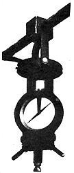
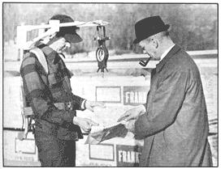

You know how the system works, gang: As long as you do it with a forked stick or a grapevine you're gonna get laughed at and looked at funny. But if you can locate water with a manufactured rig that costs $500 and that you strap right on your body . . . everything's OK. Little boys will look at you with shining eyes, fair maidens will swoon and tight-fisted businessmen will swap bills of large denomination for your services.
Ask George (Hop) Jamieson about those bills of large denomination. He's the fellow with the gen-u-wine, guaranteed, scientific water finder . . . and it's grossing him over $1,000 a week. What's more, he'll gladly help you do the same thing. If you're looking for a hearty outdoor job that pays well (because it saves your customers many times your hefty fee), has a built-in earthy prestige and looks to be downright fun, this may bear investigation.
The heart of the whole operation is a specially-designed and patented magnetometer called an Aquatometer and there both is and isn't any great mystery about how it works.
As you probably know, the earth's magnetic field is far from a serene and evenly-distributed force. It eddies and flows, stretches thin in some spots and clenches into knurled clumps in others . . . depending on soil content and distribution, rock formation and composition and other factors.
Navigators (to their dismay) and prospectors (to their delight) long ago discovered that even a primitive compass can be deflected by large, buried bodies of iron and other ore. Prospectors have since capitalized on this fact by developing the magnetometer. This is-in essence-a highly specialized compass designed specifically to detect localized variations in the planet's magnetic field.
Now this is no hit-or-miss proposition. Some magnetometers are so sensitive that one can be mounted in a large, fast aircraft and used to accurately map-in one day-the major metallic ore deposits hidden under a thousand or more square miles of rugged terrain. This is the well-known MAD, or Magnetic Aerial Detection, gear.
So there's no real secret to the basic principle of Hap Jamieson's Aquatometer. On the other hand, he's not exactly sure why it works either.
Maybe, as water travels in an underground stream, it becomes ionized and this electric "current" either adds or subtracts from the earth's average magnetic field in that area . . . and the Aquatometer detects the difference. Or possibly the instrument doesn't respond to water at all: It might be "seeing" the faults in the rock (through which the water flows) instead.
One thing Hap is certain of, however, is that when the dip needle on his Aquatometer varies one per cent from its preset reference point it is directly over a 5 to 15 gallon per minute flow of water. In fact, the apparatus is so sensitive that Hap (or any operator-there's no "skill" involved) can locate (or with 98% accuracy and-85 times out of 100-predict boththe depth and flow of the vein.
This is an incredible set of figures that becomes even more impressive when measured by the acid test for a dowser: "Show me where there isn't any water." George can do that too and he has an impressive sheaf of testimonial letters which say that his Aquatometer knows both when there is and when there isn't water in a location. A typical affirmation (from the head of a law firm, no less, and dated September 8, 1970) read.
The successful conclusion of the fourth attempt to produce water on my family's 40-acre tract of land in Greenwich prompts this letter.
In 1967, we decided to build a new home on a rugged, piece of wooded land which had been held by my wife's family for some forty years. We knew the area was a tough one initially to locate water as the main house and guest cottage subsisted on a half-gallon of water per minute (plus storage) and there were three 400' dry wells, within five hundred feet of our proposed site. On our builder's recommendation we engaged Accurate Water (A) to select prospective sites for three wells (two for new houses and one for the old houses) and (B) to help us avoid prespective dry holes. You then selected three sites for us and advised us to avoid other large areas.
We drilled the first well, where you suggested, two hundred feet from the house site. We obtained precisely the amount of water you predicted at precisely the depth you estimated. At our builder's urging we then drilled second well-600' deep-directly at the house site where you told us not to drill. The hole is dry.
We next drilled a 400' well, twenty-five feet away fro: the half-gallon per minute well for the old houses, again directly where you informed us there would be no water. There was no water-the well is dry.
We next drilled a 320' well, about 300 feet from the old house well, precisely where you told us there would be eight gallons per minute by 250 feet. We have seven gallons per minute at 260 feet.
With this batting average, I thought you might want to know that your predictions-both positive and negative-turned out to be 100% accurate.
If you've priced the drilling of a well lately you'll immediately know the value of locating water this accurately. There's nothing quite as sickening to a home owner as a $1,000 dry hole . . . unless it's two of them. Schools, golf courses, plant nurseries and other volume users of water regularly save $2,000 to $5,000 or more by retaining Jamieson's services . . . or, as the contractor for a nursing home said, "I just wish I'd known about you $4,000 earlier."
Balanced against costs like that (and many of Hap's clients come to him only after one or two dry holes), Jamieson's fees are quite reasonable. He charges a home owner an average of $125 to $170 and the rates slide up on a relatively modest scale for commercial accounts that demand "minimum flow-maximum depth" guarantees.
One current job for a contractor, for instance, runs $350 a day with a minimum guarantee of four days plus a $1500 bonus when the well comes in. The contractor, who has already invested considerable sums in very deep and very dry holes, is extremely pleased with these terms.
And if the well doesn't come in?
If the well doesn't come in, there's no charge for Hap's services. That's as ironclad a guarantee as there is and it's bringing in business to Jamieson-who works out of an office on his homestead-at a better-than-$1,000-per-week clip.
Business has been so good and the Aquatometer is now so well proven that Hap is sharing the wealth in at least two ways: (1) For $5,000 to $10,000-depending on the territory you choose-he'll set you up in an identical business of your own or (2) For $2,000 to $4,000 Jamieson will form a 50-50 corporation with you . . . and then give you back $500 of your money plus $500 of his own-for operating capital-and split all income 65% to you and 35% to him. And, if that's not fair enough, he'll even let you have the first deal for only $1,500 down and he'll carry the rest of the initial investment himself at less than bank rates.
"We've got something good here," Hap says, "and I want to make it easy for ambitious fellows who'll work with me to get in on the deal. Sure, I expect to make a little for setting someone up with an instrument and teaching him how to use it. That's only fair. But I'm certainly not being greedy. Heck, a guy can easily earn back the franchise fee for a whole state with only one or two big jobs. What other business offers an opportunity like that?"
What other business indeed . . . one thousand dollars or more a week, working outdoors, from a home office, virtually when and where you choose, for folks who believe your services are one big bargain.
Can all that be true . . . or is there a catch somewhere? You can decide for yourself by writing:
G.L. Jamieson, President
Accurate Water Location, Inc. Dept. ME
Rt. 376
Poughkeepsie, New York 12603
And, as they say, choice locations are going fast!
|
 |
 |
|